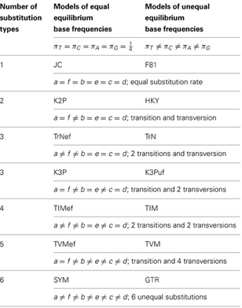
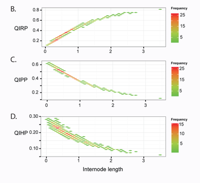
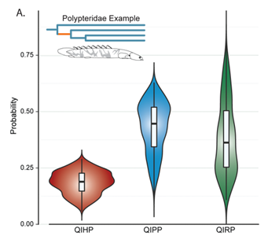

Overview
This section covers the basics of how to quantify signal versus noise for a given phylogenetic problem
These quantifications are based on Townsend et al. (2012), who introduced theory that takes into the account the interplay of site rates, time, and internode length between species divergences to assess the predicted probabilty of data contributing to accurate topological resolution
Use of this method requires three inputs:
Site rates, state space, and internode lengths
Site rates are covered above. Now we'll introduce the internode lengths and state spaces and will continue using the avian tree and site rates from Prum et al. (2015) that are distributed with phyinformR. In case these are not in memory already use
library(ape)
tree<-read.tree(system.file("extdata","Prumetal_timetree. phy",package="PhyInformR"))
rr<-as.matrix(prumetalrates)There are three quantities that phyloInformeR calculates with regard to a specified internode given a set of site rates: Quartet Internode Resolution Probability (QIRP, "Quirp"), Quartet Internode Homoplasy Probability (QIHP, "Quip"), and Quartet Internode Polytomy Probability (QIPP, "Quippy").
Townsend et al. (2012) introduced two ways to calculate these quantities: An analytical approximation and a Monte Carlo based solution. Both approaches depend on site rates and two user defined internode lengths, T (time from present) and t (internode)

The theory of Townsend et al. defines T and t based on a phylogenetic quartet with even branch lengths. Under this assumption, T is the time from the present to the ancestor of a taxon (red in the example above) and t, the focal internode length (grey in the example above). Later in this section we will discuss how to perform similar analyses allowing for uneven quartets
Lets start by calculating approximate solutions for QIRP, QIHP, and QIPP
Using the above illustration, you should have an idea of what T (time) and t (internode distance) you will want to use for your data.
For state space, a binary morphological matrix could be assessed by setting the state space to 2 or amino acid (20 or ~5), or other types of data with differing numbers of characters. If you are using nucleotides, despite having a four character states, Simmons et al. have demonstrated the state space to be better modelled using 3 states, so we will go with that for the remainder of this guide.
Here is the implementation using T= 100 million year (Ma) and t= 0.5 Ma
Approximator(100,0.5, rr, 3) Alternatively you can use the Monte Carlo simulation approach1. Since the simulation is time consuming dependent on the number of simulations and the number of sites, we recommend that you do this on a cluster or while you are doing something else. The output is automatically recorded to file. The input looks similar to the approximation, though now you specify a file name for the probabilities and an image file name. Note that the two files must have different names!
You can also toggle the screen output on and off by setting image to either "TRUE" or "FALSE". The simulation can be run in parallel so
Remember to set your cores appropriately using the registerDoParallel(cores=8)
Here is the function using the same T and t and 5000 simulations on a subset of sites to save time
rr2<-as.matrix(prumetalrates[1:20000])
parallel.cluster.signal.noise(100,0.5,rr2,5000,3,filename="test",imagename="testimage",image="FALSECalculations based on the equations of Townsend et al.(2012) make several assumptions
1) equal base frequency distributions in the alignment
2) equal branch lengths within the phylogenetic quartet
3) a Jukes-Cantor model of sequence evolution
Su et al. (2014) provided extensions to the equations of Townsend et al.(2012) that enable any nucleotide substitution model or distribution of base frequencies and Su and Townsend (2015) provided the theoretical framework for relaxing the assumption of even branch lengths
To use these extension, first specify your model settings based on a model selection program such as Modeltest, or Partitionfinder6. Model settings are defined as follows and require changing for different nucleotide substitution models, base frequencies, and branch lengths
For example:
a=1
b=1
c=1
d=1
e=1
f=1
Pi_T=0.25
Pi_C=0.25
Pi_A=0.25
Pi_G=0.25
internode<-c(62.4937, 62.4937, 62.4937, 62.4937, 8.9939)
IMPORTANT | these must sum up to one | Pi_T + Pi_C + Pi_A + Pi_G = 1
a through f are the relative rate parameters which are defined as follows
rCT = rTC = a; rAT = rTA = b; rTG = rGT = c; rCA = rAC = d; rCG = rGC = e; rAG = rGA = f
A table of relative rate parameter settings for different substitution models taken from Su et al. (2014) is attached for reference 
Internode in the above code is an object containing the numerical values of branch lengths of T1, T2, T3, T4, and the internode length t0 for the four - taxon tree in question
IMPORTANT -T1 and T2 must belong to the same sister clade and T3 and T4 must belong to the other clade in the hypothesized topology of the four - taxon problem in question (see above)
Quartet trees do not need to be rooted. All four subtending branches may vary
You can quantify QIHP, QIPP, and QIRP with
allmodel.signal.noise (a,b,c,d,e,f,internode,Pi_T,Pi_C,Pi_A,Pi_G, rr)Since branch length are rarely known with certainty, phyinformR can also be used to calculate QIRP, QIPP, and QIHP values across a distribution of trees such as those obtained from Bayesian analyses.
For this example, we will read in use the sample distribution of bichir trees from a study by Near et al. 2015 that is provided with the release
library(ape)
trees<-read.tree(system.file("extdata","polypterus_trees.phy",package="PhyInformR"))
rate_vector<-as.matrix(rag1)We define the quartet as follows
quart<- c("Polypterus_congicus","Polypterus_bichir","Polypterus_ansorgii" ,"Polypterus_endlicheri" )final<-su.bayes(a,b,c,d,e,f,Pi_T,Pi_C,Pi_A,Pi_G,rate_vector,quart,trees)su.bayes runs in parallel so remember to set your cores appropriately using registerDoParallel(cores=8)
su.bayes returns a matrix of internodes and T values from the trees and their associated QIHP, QIPP, and QIRP values. This matrix can be summarized using
plotPosterior(final, plot="QIPs") #or
plotPosterior(final,plot="violin")Setting plot="qips" returns a density plot of the quartet internode resolution/polytomy/homoplasy probabilities and the internode lengths

Visualizing the density of calculations reveals a trend that is common in phylogenetic datasets. Both lack of information and increased probabilities of convergence misleading inference plague smaller internodes. In this plot we can see that the bulk of the posterior density is in the realm of low QIRP and high QIPP, so we can conclude that the lack of resolution of this clade by this locus is in part predicted to be driven by limited information content
Plot = "violin" returns violin plots of the quartet internode resolution/polytomy/homoplasy probabilities and the internode lengths

Visualizing the quantiles and kernel density of calculations allows for a additional perspective of how topological and branch length uncertainty influence quantifications.
In this case we can see from the box plot of quantiles that QIHP is generally low, but that QIPP is centered near 0.45 with the majority of trees leading to a calculation between about 0.5 and 0.35. The kernel density gives us additional perspective, showcasing somewhat inverted distributions between QIRP and QIPP, with the majority of QIRP values being lower.